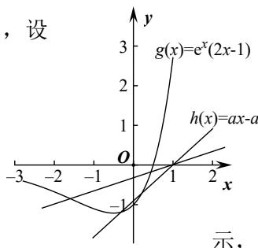

深圳中学 2024 级高二数学周测（3）参考答案
| 选择题 | 多选题 | |||||||||
| 1 | 2 | 3 | 4 | 5 | 6 | 7 | 8 | 9 | 10 | 11 |
| C | D | C | B | A | D | C | C | BD | AD | AD |
填空题：12. \(y = \frac{1}{\mathrm{e}} x\) ， \(y = -\frac{1}{\mathrm{e}} x\) 13.-3 14. \([\frac{3}{2e},1)\)
5. A
详解构造新函数 \(g(x) = \frac{f(x)}{x}\) , \(g'(x) = \frac{xf'(x) - f(x)}{x^2}\) ，当 \(x > 0\) 时 \(g'(x) < 0\) .
所以在 \((0,+\infty)\) 上 \(g(x)=\frac{f(x)}{x}\) 单减，又 \(f(1)=0\) ，即 \(g(1)=0\) .
所以 \(g(x)=\frac{f(x)}{x}>0\) 可得 0<x<1, 此时 \(f(x)>0\) ,
又 \(f(x)\) 为奇函数，所以 \(f(x)>0\) 在 \((-∞,0)∪(0,+∞)\) 上的解集为： \((-∞,-1)∪(0,1)\) .
7. C
详解依题可知， \(f'(x) = ae^{x} - \frac{1}{x} \geq 0\) 在(1,2)上恒成立，显然 \(a > 0\) ，所以 \(x\mathrm{e}^x \geq \frac{1}{a}\) ，
设 \(g(x)=xe^{x}, x\in(1,2)\) ，所以 \(g'(x)=(x+1)e^{x}>0\) ，所以 \(g(x)\) 在 \((1,2)\) 上单调递增，
\(g(x) > g(1) = \mathrm{e}\) ，故 \(\mathrm{e} \geq \frac{1}{a}\) ，即 \(a \geq \frac{1}{\mathrm{e}} = \mathrm{e}^{-1}\) ，即 \(a\) 的最小值为 \(\mathrm{e}^{-1}\) .
8. C
详解当 \(x = 1\) 时， \(f(1) = 1 - 2a + 2a = 1 > 0\) 恒成立；
当 \(x < 1\) 时， \(f(x) = x^2 - 2ax + 2a \geqslant 0 \Leftrightarrow 2a \geqslant \frac{x^2}{x - 1}\) 恒成立，令
\[g (x) = \frac {x ^ {2}}{x - 1} = - \frac {x ^ {2}}{1 - x} = - \frac {(1 - x - 1) ^ {2}}{1 - x} = - \frac {(1 - x) ^ {2} - 2 (1 - x) + 1}{1 - x} =\]
\(-(1 - x) + \frac{1}{1 - x} - 2 \leqslant -\left(2\sqrt{(1 - x) \cdot \frac{1}{1 - x}} - 2\right) = 0\) ，所以 \(2a \geqslant g(x)_{\max} = 0\) ，即 \(a > 0\) 。
当 \(x > 1\) 时， \(f(x) = x - a \ln x \geqslant 0 \Leftrightarrow a \leqslant \frac{x}{\ln x}\) 恒成立，令 \(h(x) = \frac{x}{\ln x}\) ，则 \(h'(x) = \frac{\ln x - x \cdot \frac{1}{x}}{(\ln x)^2} = \frac{\ln x - 1}{(\ln x)^2}\) .
当 \(x > \mathrm{e}\) 时， \(h'(x) > 0\) ， \(h(x)\) 递增，当 \(1 < x < \mathrm{e}\) 时， \(h'(x) < 0\) ， \(h(x)\) 递减，
所以当 \(x = \mathsf{e}\) 时， \(h(x)\) 取得最小值 \(h(\mathsf{e}) = \mathsf{e}\) . 所以 \(a \leqslant h(x)_{\min} = \mathsf{e}\) .
综上，a 的取值范围是 \([0, e]\) .
10. AD
详解A 选项：设 \(x_{1} > x_{2}\) ，函数 \(2^{x}\) 单调递增，所有 \(2^{x_{1}} > 2^{x_{2}}\) ， \(x_{1} - x_{2} > 0\) ，
则 \(m=\frac{f(x_{1})-f(x_{2})}{x_{1}-x_{2}}=\frac{2^{x_{1}}-2^{x_{2}}}{x_{1}-x_{2}}>0\) ，所以 A 选项正确；
B 选项：设 \(x_{1} > x_{2}\) ，则 \(x_{1} - x_{2} > 0\) ，则 \(n = \frac{g(x_{1}) - g(x_{2})}{x_{1} - x_{2}} = \frac{x_{1}^{2} - x_{2}^{2} + a(x_{1} - x_{2})}{x_{1} - x_{2}}\) \(= \frac{(x_1 - x_2)(x_1 + x_2 + a)}{x_1 - x_2} = x_1 + x_2 + a\) ，可令 \(x_{1} = 1\) ， \(x_{2} = 2\) ， \(a = -4\) ，则 \(n = -1 < 0\) ，所以 B 选项错误；
C 选项：因为 \(m = n\) ， \(\frac{f(x_1) - f(x_2)}{x_1 - x_2} = x_1 + x_2 + a\) ，分母乘到右边，
右边即为 \(g(x_1) - g(x_2)\) ，所以原等式即为 \(f(x_1) - f(x_2) = g(x_1) - g(x_2)\) ，
即为 \(f(x_1) - g(x_2) = f(x_1) - g(x_2)\) ，令 \(h(x) = f(x) - g(x)\) ，
则原题意转化为对于任意的 ℓ，函数 \(h(x) = f(x) - g(x)\) 存在不相等的实数 \(x_{1}\) ， \(x_{2}\) 使得函数值相等， \(h(x) = 2^{x} - x^{2} - ax\) ，则 \(h'(x) = 2^{x} \ln 2 - 2x - a\) ，
则 \(h''(x) = 2^{x} (\ln 2) - 2\) ，令 \(h''(x_0) = 0\) ，且 \(1 < x_0 < 2\) ，可得 \(h'(x_0)\) 为极小值.
若 \(a = -10000\) ，则 \(h'(x_0) > 0\) ，即 \(h'(x_0) > 0\) ， \(h(x)\) 单调递增，不满足题意，
所以 C 选项错误.
D 选项： \(f(x_1) - f(x_2) = g(x_1) - g(x_2)\) ，则 \(f(x_1) + g(x_1) = g(x_2) + f(x_2)\) ，
设 \(h(x) = f(x) + g(x)\) ，有 \(x_{1}\) ， \(x_{2}\) 使其函数值相等，则 \(h(x)\) 不恒为单调. \(h(x) = 2^{x} + x^{2} + ax\) ， \(h'(x) = 2^{x} \ln 2 + 2x + a\) ， \(h''(x) = 2^{x} (\ln 2)^{2} + 2 > 0\) 恒成立， \(h'(x)\) 单调递增且 \(h'(-\infty) < 0\) ， \(h'(+\infty) > 0\) 。所以 \(h(x)\) 先减后增，满足题意，所以 D 选项正确.
11. AD
详解A选项， \(f'(x)=6x^{2}-6ax=6x(x-a)\) ，由于a>1，故 \(x\in(-\infty,0)\cup(a,+\infty)\) 时 \(f'(x)>0\) ，故 \(f(x)\) 在 \((-∞,0),(a,+∞)\) 上单调递增， \(x∈(0,a)\) 时， \(f'(x)<0\) ， \(f(x)\) 单调递减，则 \(f(x)\) 在x=0处取到极大值，在x=a处取到极小值，由 \(f(0)=1>0\) ， \(f(a)=1-a^{3}<0\) ，则 \(f(0)f(a)<0\) ，根据零点存在定理 \(f(x)\) 在 \((0,a)\) 上有一个零点， 又 \(f(-1)=-1-3a<0\) ， \(f(2a)=4a^{3}+1>0\) ，则 \(f(-1)f(0)<0,f(a)f(2a)<0\) ，则 \(f(x)\) 在 \((-1,0),(a,2a)\) 上各有一个零点，于是a>1时， \(f(x)\) 有三个零点，A选项正确； B选项， \(f'(x)=6x(x-a)\) ，a<0时， \(x∈(a,0),f'(x)<0\) ， \(f(x)\) 单调递减， \(x∈(0,+\infty)\) 时 \(f'(x)>0\) ， \(f(x)\) 单调递增，此时 \(f(x)\) 在x=0处取到极小值，B选项错误； C选项，假设存在这样的a,b，使得x=b为 \(f(x)\) 的对称轴， 即存在这样的a,b使得 \(f(x)=f(2b-x)\) ，即 \(2x^{3}-3ax^{2}+1=2(2b-x)^{3}-3a(2b-x)^{2}+1\) ，根据二项式定理，等式右边 \((2b-x)^{3}\) 展开式含有 \(x^{3}\) 的项为 \(2C_{3}^{3}(2b)^{0}(-x)^{3}=-2x^{3}\) ，于是等式左右两边 \(x^{3}\) 的系数都不相等，原等式不可能恒成立，
于是不存在这样的 a, b，使得 x = b 为 \(f(x)\) 的对称轴，C 选项错误；
D 选项，方法一：利用对称中心的表达式化简
\(f(1)=3-3a\) ，若存在这样的a，使得 \((1,3-3a)\) 为 \(f(x)\) 的对称中心，则 \(f(x)+f(2-x)=6-6a\) ，事实上， \(f(x)+f(2-x)=2x^{3}-3ax^{2}+1+2(2-x)^{3}-3a(2-x)^{2}+1=(12-6a)x^{2}+(12a-24)x+18-12a\) 于是 \(6-6a=(12-6a)x^{2}+(12a-24)x+18-12a\) 即 \(\left\{\begin{aligned}&12-6a=0\\ &12a-24=0\\ &18-12a=6-6a\end{aligned}\right.\) ，解得a=2，即存在a=2使得 \((1,f(1))\) 是 \(f(x)\) 的 对称中心方法二：直接利用拐点结论任何三次函数都有对称中心，对称中心的横坐标是二阶导数的零点， \(f(x)=2x^{3}-3ax^{2}+1,\quad f'(x)=6x^{2}-6ax,\quad f''(x)=12x-6a\) ，由 \(f''(x)=0\Leftrightarrow x=\frac{a}{2}\) ，于是该三次函数的对称中心为 \(\left(\frac{a}{2},f\left(\frac{a}{2}\right)\right)\) ，由题意 \((1,f(1))\) 也是对称中心，故 \(\frac{a}{2}=1\Leftrightarrow a=2\)
13. -3详解[方法一]:[通性通法]单调性法
求导得 \(f'(x)=6x^{2}-2ax\) ，当 \(a\leq0\) 时，函数 \(f(x)\) 在区间 \((0,+\infty)\) 内单调递增，且 \(f(x)>f(0)=1\) ，所以函数 \(f(x)\) 在 \((0,+\infty)\) 内无零点；当 a>0 时，函数 \(f(x)\) 在区间 \(\left(0,\frac{a}{3}\right)\) 内单调递减，在区间 \(\left(\frac{a}{3},+\infty\right)\) 内单调递增。 当 x=0 时， \(f(0)=1\) ；当 \(x\to+\infty\) 时， \(f(x)\to+\infty\) . 要使函数 \(f(x)\) 在区间 \((0,+\infty)\) 内有且仅有一个零点，只需 \(f\left(\frac{a}{3}\right)=0\) ，解得 a=3。于是函数 \(f(x)\) 在区间 \([-1,0]\) 上单调递增，在区间 \((0,1]\) 上单调递减， \([f(x)]_{\max}=f(0)=1,[f(x)]_{\min}=f(-1)=-4\) ，所以最大值与最小值之和为 -3。
[方法二]: 等价转化
由条件知 \(2x^{3} + 1 = ax^{2}\) 有唯一的正实根，于是 \(a = \frac{2x^3 + 1}{x^2} = 2x + \frac{1}{x^2}\) 。令 \(g(x) = 2x + \frac{1}{x^2}, x > 0\) ，则 \(g'(x) = 2 - \frac{2}{x^3} = \frac{2(x^3 - 1)}{x^3}\) ，所以 \(g(x)\) 在区间 \((0,1)\) 内单调递减，在区间 \((1, +\infty)\) 内单调递增，且 \(g(1) = 3\) ，当 \(x \to 0\) 时， \(g(x) \to +\infty\) ；当 \(x \to +\infty\) 时， \(g(x) \to +\infty\) 。只需直线 \(y = a\) 与 \(g(x)\) 的图像有一个交点，故 \(a = 3\) ，下同方法一。
14. \([\frac{3}{2e}, 1)\)
详解由题意可知存在唯一的整数 \(x_0\) ，使得 \(e^{x_0}(2x_0 - 1) < ax_0 - a\) ，设
\(g(x)=e^{x}(2x-1)\) ， \(h(x)=ax-a\) ，由 \(g'(x)=e^{x}(2x+1)\) ，可知 \(g(x)\) 在 \((-∞,-\frac{1}{2})\)
上单调递减，在 \((- \frac{1}{2}, +\infty)\) 上单调递增，作出 \(g(x)\) 与 \(h(x)\) 的大致图象如图所

故 \(\left\{\begin{aligned}h(0)>g(0)\\h(-1)\leqslant g(-1)\end{aligned}\right.\) ，即 \(\left\{\begin{aligned}a<1\\-2a\leqslant-\frac{3}{e}\end{aligned}\right.\) ，所以 \(\frac{3}{2e}\leqslant a<1\) .
15.
详解(1)因为 \(f(x) = [ax^2 - (4a + 1)x + 4a + 3]e^x\) ，
所以 \(f'(x)=[2ax-(4a+1)]e^{x}+[ax^{2}-(4a+1)x+4a+3]e^{x}\quad(x\in\mathbf{R})\) \(=[ax^{2}-(2a+1)x+2]e^{x}\) . \(f'(1)=(1-a)e\) . 由题设知 \(f'(1)=0\) ，即 \((1-a)e=0\) ，解得 a=1.
此时 \(f(1)=3e\neq0\) . 所以 a 的值为 1.
(2)由(1)得 \(f'(x)=[ax^{2}-(2a+1)x+2]e^{x}=(ax-1)(x-2)e^{x}\) .
若 \(a > \frac{1}{2}\) ，则当 \(x \in (\frac{1}{a}, 2)\) 时， \(f'(x) < 0\) ；当 \(x \in (2, +\infty)\) 时， \(f'(x) > 0\) 。所以 \(f(x) < 0\) 在 \(x = 2\) 处取得极小值。若 \(a \leqslant \frac{1}{2}\) ，则当 \(x \in (0, 2)\) 时， \(x - 2 < 0\) ， \(ax - 1 \leqslant \frac{1}{2} x - 1 < 0\) ，所以 \(f'(x) > 0\) 。所以 2 不是 \(f(x)\) 的极小值点。综上可知， \(a\) 的取值范围是 \((\frac{1}{2}, +\infty)\) 。
16.
详解(1) \(f(x)\) 的定义域为 \((0,+\infty)\) ， \(f'(x)=-\frac{1}{x^{2}}-1+\frac{a}{x}=-\frac{x^{2}-ax+1}{x^{2}}\) .
（i）若 \(a \leqslant 2\) ，则 \(f'(x) \leqslant 0\) ，当且仅当 \(a = 2\) ， \(x = 1\) 时 \(f'(x) = 0\) ，所以 \(f(x)\) 在 \((0, +\infty)\) 单调递减.
（ii）若 \(a > 2\) ，令 \(f^{\prime}(x) = 0\) 得， \(x = \frac{a - \sqrt{a^2 - 4}}{2}\) 或 \(x = \frac{a + \sqrt{a^2 - 4}}{2}\)
当 \(x \in (0, \frac{a - \sqrt{a^2 - 4}}{2}) \cup (\frac{a + \sqrt{a^2 - 4}}{2}, +\infty)\) 时， \(f'(x) < 0\) ；
当 \(x \in (\frac{a - \sqrt{a^2 - 4}}{2}, \frac{a + \sqrt{a^2 - 4}}{2})\) 时， \(f'(x) > 0\) 。所以 \(f(x)\) 在 \((0, \frac{a - \sqrt{a^2 - 4}}{2})\) ， \((\frac{a + \sqrt{a^2 - 4}}{2}, +\infty)\) 单调递减，在 \((\frac{a - \sqrt{a^2 - 4}}{2}, \frac{a + \sqrt{a^2 - 4}}{2})\) 单调递增。
(2)由(1)知， \(f(x)\) 存在两个极值点当且仅当a>2.
由于 \(f(x)\) 的两个极值点 \(x_{1}\) ， \(x_{2}\) 满足 \(x^{2} - ax + 1 = 0\) ，所以 \(x_{1}x_{2} = 1\) ，不妨设 \(x_{1} < x_{2}\) ，则 \(x_{2} > 1\) 。由于 \(\frac{f(x_1) - f(x_2)}{x_1 - x_2} = -\frac{1}{x_1x_2} - 1 + a\frac{\ln x_1 - \ln x_2}{x_1 - x_2} = -2 + a\frac{\ln x_1 - \ln x_2}{x_1 - x_2} = -2 + a\frac{-2\ln x_2}{\frac{1}{x_2} - x_2}\) ，
所以 \(\frac{f(x_1) - f(x_2)}{x_1 - x_2} < a - 2\) 等价于 \(\frac{1}{x_2} - x_2 + 2\ln x_2 < 0\) 。设函数 \(g(x) = \frac{1}{x} - x + 2\ln x\) ，由(1)知， \(g(x)\) 在 \((0, +\infty)\) 单调递减，又 \(g(1) = 0\) ，从而当 \(x \in (1, +\infty)\) 时， \(g(x) < 0\) 。所以 \(\frac{1}{x_2} - x_2 + 2\ln x_2 < 0\) ，得证